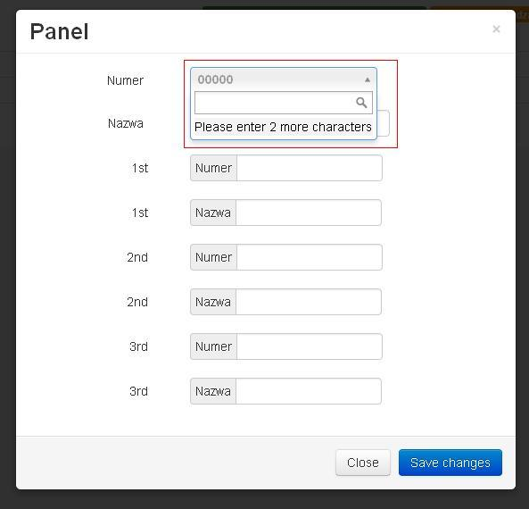

Select2 doesn't work when embedded in a bootstrap modal
When I use a select2 (input) in bootstrap modal, I can't type anything into it. It's like disabled? Outside the modal select2 works fine.

Working example: http://jsfiddle.net/byJy8/1/ code:
<!-- Modal --> <div id="myModal" class="modal hide fade" tabindex="-1" role="dialog" aria-labelledby="myModalLabel" aria-hidden="true"> <div class="modal-header"> <button type="button" class="close" data-dismiss="modal" aria-hidden="true">×</button> <h3 id="myModalLabel">Panel</h3> </div> <div class="modal-body" style="max-height: 800px"> <form class="form-horizontal"> <!-- Text input--> <div class="control-group"> <label class="control-label" for="vdn_number">Numer</label> <div class="controls"> <!-- seleect2 --> <input name="vdn_number" type="hidden" id="vdn_number" class="input-large" required="" /> </div> </div> </form> </div> <div class="modal-footer"> <button class="btn" data-dismiss="modal" aria-hidden="true">Close</button> <button class="btn btn-primary">Save changes</button> </div> </div>
JS
$("#vdn_number").select2({ placeholder: "00000", minimumInputLength: 2, ajax: { url: "getAjaxData/", dataType: 'json', type: "POST", data: function (term, page) { return { q: term, // search term col: 'vdn' }; }, results: function (data) { // parse the results into the format expected by Select2. // since we are using custom formatting functions we do not need to alter remote JSON data return {results: data}; } } });
answers:
here you can find a quick fix
and here is 'the right way': Select2 doesn't work when embedded in a bootstrap modal
Answer
Ok, I've got it to work.
change
<div id="myModal" class="modal hide fade" tabindex="-1" role="dialog" aria-labelledby="myModalLabel" aria-hidden="true"> <div class="modal-header"> <button type="button" class="close" data-dismiss="modal" aria-hidden="true">×</button> <h3 id="myModalLabel">Panel</h3> </div> <div class="modal-body" style="max-height: 800px">
to
<div id="myModal" class="modal hide fade" role="dialog" aria-labelledby="myModalLabel" aria-hidden="true"> <div class="modal-header"> <button type="button" class="close" data-dismiss="modal" aria-hidden="true">×</button> <h3 id="myModalLabel">Panel</h3> </div> <div class="modal-body" style="max-height: 800px">
(remove tabindex="-1" from modal)
Suggest
For Select2 v4:
Use dropdownParent to attach the dropdown to the modal dialog, rather than
the HTML body.
<!-- Modal --> <div class="modal fade" id="myModal" tabindex="-1" role="dialog" aria-labelledby="myModalLabel"> <div class="modal-dialog" role="document"> <div class="modal-content"> <div class="modal-header"> <button type="button" class="close" data-dismiss="modal" aria-label="Close"><span aria-hidden="true">×</span></button> <h4 class="modal-title" id="myModalLabel">Modal title</h4> </div> <div class="modal-body"> <select id="select2insidemodal" multiple="multiple"> <option value="AL">Alabama</option> ... <option value="WY">Wyoming</option> </select> </div> <div class="modal-footer"> <button type="button" class="btn btn-default" data-dismiss="modal">Close</button> <button type="button" class="btn btn-primary">Save changes</button> </div> </div> </div> </div> <script> $(document).ready(function() { $("#select2insidemodal").select2({ dropdownParent: $("#myModal") }); }); </script>
This will attach the Select2 dropdown so it falls within the DOM of the modal rather than to the HTML body (the default). See https://select2.org/dropdown#dropdown-placement